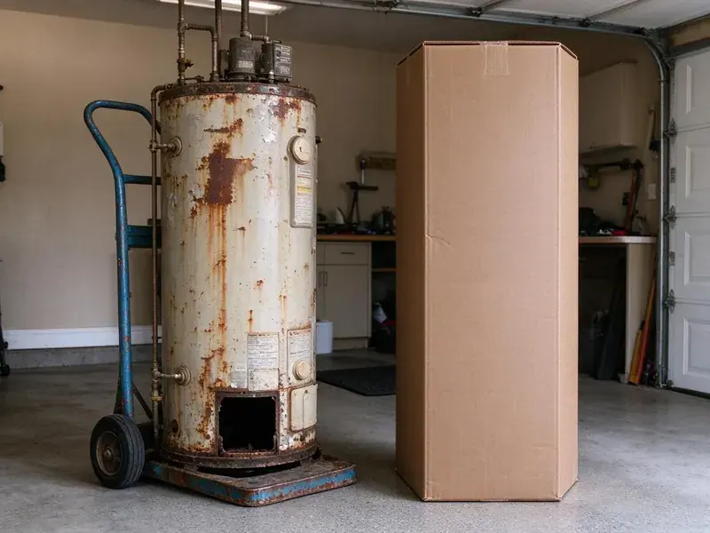

Plumbing Replacement in Winter Haven, FL
When your plumbing system in Winter Haven, FL is beyond repair, a full replacement is often the most cost-effective and reliable solution for long-term peace of mind.
- Old Equipment Hauled Away
- Upfront Replacement Pricing
- Licensed & Insured
- Warrantied Work

Need a Plumbing Replacement in Winter Haven, FL?
Do not let old plumbing cause bigger issues. Call HDF Plumbing for a professional assessment today.
Plumbing Replacement in Winter Haven, FL for Equipment, Pipes and Sewer Systems
At HDF Plumbing, we understand that a plumbing replacement can be a significant investment for homeowners in Winter Haven, FL. We use high-quality materials and proven techniques so every replacement, from a simple faucet to an entire home repipe, meets high standards for durability and performance.
Our expertise includes:
- Water line, sewer line and whole-home pipe replacement
- Sewer, water and gas line replacements
- Water heater and tankless unit swaps

Additional Plumbing Replacement Services in Winter Haven, FL
When repairs are no longer enough, our replacement services in Winter Haven, FL deliver durable upgrades that restore full performance.


Customers
Why Choose HDF Plumbing for Plumbing Replacement in Winter Haven, FL?
Our plumbers install equipment and pipe to current code, which often means adding expansion tanks, pans or upgraded venting. These updates protect your home and help with future inspections.
- Skilled Technicians, Our plumbers are well trained and experienced in all aspects of plumbing replacement, from residential to light commercial.
- Local Expertise, We understand the plumbing challenges posed by Florida soil conditions and climate, ensuring tailored solutions.
- Honest Advice, We tell you when a repair makes more sense than replacement.
Citywide Coverage
We provide plumbing replacement across Winter Haven, from older homes with galvanized pipe to newer homes with first-generation water heaters reaching the end of their life. Our trucks carry common equipment and parts.
Experienced Team
Our plumbers replace water heaters, pumps, softeners and pipe every week and know which brands and materials hold up to Florida conditions. They plan each replacement around your home's layout.
Safety-First Approach
Permits and inspections are handled when required, especially for water heaters, water lines and sewer replacements. We also install required safety devices like expansion tanks, relief valve drains and 18 inch garage stands where code calls for them.
Trusted Certified Winter Haven Plumbing Services Professionals
At HDF Plumbing, we take pride in providing certified plumbing services throughout Winter Haven, FL. Backed by recognized industry credentials, our experienced plumbers combine technical skill with genuine customer care. Whether it is repair, installation, or maintenance, we follow strict safety and quality standards to deliver lasting results you can trust.
Call Us Now PHCC Plumbing Contractor Recognition
PHCC Plumbing Contractor Recognition Better Business Bureau (BBB) Accreditation
Better Business Bureau (BBB) Accreditation Angi Certified Pro
Angi Certified Pro ISO 9001 Quality Management Certification
ISO 9001 Quality Management CertificationTrusted Plumbing Replacement Work in Winter Haven, FL
Water Heater Replacement in Winter Haven
When your water heater is leaking, not heating or providing too little hot water, it is often more cost-effective to replace it than to repair it, especially if it is over 10 years old. We install standard tank water heaters, sized properly for your home's needs and compliant with current energy efficiency standards. Our team handles the safe removal of your old unit and the careful installation of your new one, connecting gas or electric lines and confirming correct venting and pressure relief valve operation for performance and safety.

Well Pump and Pressure Tank Replacement in Winter Haven, FL
Rural properties rely on well pumps to deliver water, and pump failure means no water at all. Common signs include pressure that fluctuates, a pump that cycles rapidly or no water at the tap. We replace submersible and jet pumps and waterlogged pressure tanks with correctly sized equipment. Pressure switch settings are adjusted for steady pressure throughout the home.
Repair vs Replacement Cost Comparison in Winter Haven, FL
A common rule of thumb is to replace when a repair costs more than half the price of new equipment or when the item is near the end of its useful life. Replacement also makes sense when repeated repairs are adding up. We give you side-by-side pricing for repair and replacement so you can decide with real numbers. Many replacements also improve efficiency and lower future repair costs.
Well Pump & Pressure Tank Replacement in Winter Haven
For rural properties in and around Winter Haven that rely on well water, a failing well pump or pressure tank can leave you with no water at all. We diagnose issues with your current well system and provide expert replacement for submersible or jet pumps. We also replace faulty pressure tanks, so your well system maintains consistent water pressure and your pump lasts longer. Proper sizing and installation are essential for efficient operation and a reliable water supply.
Water Softener Replacement in Winter Haven, FL
Hard water leads to mineral buildup in pipes and appliances. Water across much of Florida comes from limestone aquifers and runs hard, leaving heavy scale on fixtures and inside water heaters. If your old water softener is no longer effectively removing minerals, or if it is over 15 years old, a replacement will protect your plumbing and improve water quality. We replace all types of water softeners, including salt-based and salt-free systems, sized for your household's water usage and installed correctly on your main water line to provide truly soft water throughout your Winter Haven home.
Water Line Replacement in Winter Haven, FL
A leaking main water line can lead to major water loss, high bills and foundation damage, which is a serious concern for homes on slab foundations. Our water line replacement services address issues like corroded pipes, leaks or low water pressure. We locate the leak, excavate the area if necessary and replace the damaged section or the entire line with durable PEX or copper piping. We make sure of a secure, leak-free connection from the meter to your home, restoring reliable water flow.
Tankless Water Heater Replacement in Winter Haven, FL
Upgrade to endless hot water with a tankless water heater replacement. These units heat water on demand, saving energy and space, which is a great benefit for Winter Haven homes. We focus on replacing older tankless units or converting from traditional tank heaters to high-efficiency tankless models from brands like Rinnai and Noritz. Our service includes assessing your home's gas line capacity or electrical service, ensuring proper venting and precise installation to maximize efficiency and longevity.

Gas Line Replacement in Winter Haven
Old or damaged gas lines pose a serious safety risk and require immediate attention. If you suspect a gas leak or your gas lines show signs of corrosion or age, our licensed plumbers in Winter Haven can perform safe and code-compliant gas line replacement. We use appropriate materials like black steel pipe or corrugated stainless steel tubing (CSST) for secure installations, making sure all connections are leak-tested and meet strict safety regulations for your home's protection.
Nearby Plumbing Replacement in Winter Haven, FL
If you are searching for plumbing replacement near me because your water heater just failed or your sewer line keeps backing up, call our local team. We respond fast and can often replace water heaters the same day. Larger projects are scheduled promptly with a firm timeline.
When you search for "plumbing replacement near me" in Winter Haven, FL, HDF Plumbing is your trusted local expert. We are dedicated to providing prompt, professional service to every resident in the area. Our team is always ready to respond to your plumbing needs and keep your home's systems running smoothly.
HDF Plumbing at a Glance
- Licensed and insured plumbers serving Winter Haven, FL
- 24/7 emergency service with same-day scheduling
- Clear written estimates, no hidden fees
- 4.9-star rated by 739+ Florida customers
Winter Haven Map
Winter Haven Information
- Population
- 57,109
- Area codes
- 863/407/352
- Service area
- Winter Haven and communities within 40 miles
- Nearby
- Lakeland, Poinciana, Four Corners, Kissimmee
Hard water, temperature extremes and shifting soil can shorten the life of water heaters, pipes and sewer lines, making timely replacement a smart way to avoid costly water damage.
Expert Services
Trust our professionals for reliable HDF Plumbing solutions in Winter Haven, FL.
Our Specialized Plumbing Services in Winter Haven, FL
At HDF Plumbing, we provide a complete range of plumbing services across Winter Haven, FL. From leak detection to full system installations, our team ensures fast, precise, and affordable service for both residential and commercial properties. Explore our core services below:


How Our Plumbing Replacement Process Works in Winter Haven, FL
From initial assessment to final inspection, HDF Plumbing provides a smooth and professional plumbing replacement experience.
Request a Quote
Call (904) 925-7356 and describe the problem or the equipment you want replaced. We schedule a visit and give you repair and replacement options with upfront pricing.
Remove and Replace
We remove the old equipment or pipe, install the replacement and make required code upgrades. Old materials are removed from your property.
Test and Review
We test the new system for proper operation and leaks, and schedule inspection when required. Then we review maintenance and warranty details together.
Frequently Asked Questions About Plumbing Replacement in Winter Haven
The cost of plumbing replacement in Winter Haven, FL varies widely depending on the specific service. A water heater replacement might range from $1,200 to $3,500, while a full house repipe could be $4,000 to $15,000+. We provide clear, upfront pricing after a thorough on-site evaluation.
Common signs include frequent leaks, discolored water, persistent low water pressure, recurring clogs or visible corrosion on pipes. If repairs are becoming frequent and costly, replacement is often the more economical long-term solution.
Yes, for critical issues like burst pipes or non-functional water heaters, HDF Plumbing offers emergency plumbing replacement. We understand that some plumbing failures cannot wait, and we prioritize urgent situations to restore safety and function to your Winter Haven home.
Replacing old pipes with PEX or copper offers numerous benefits. PEX is flexible, corrosion-resistant and less prone to bursting in freezes, while copper is durable and long-lasting. Both improve water quality, eliminate leaks from old pipes and can significantly boost water pressure and flow throughout your Winter Haven home.
Consider the age of the equipment, the cost of repair compared with replacement and how often it has needed service. We give you both options with pricing so you can choose.
HDF Plumbing stands behind our plumbing replacement services with comprehensive warranties covering both parts and labor. The warranty period varies by the type of replacement and the manufacturer's warranty on components, but we always give you clear information on your coverage for your peace of mind.
Hard water causes scale and sediment, while heat and shifting soil stress pipes and equipment. Water across much of Florida comes from limestone aquifers and runs hard, leaving heavy scale on fixtures and inside water heaters. Regular maintenance helps, but replacement sooner or later becomes the smarter choice.
Yes, many major plumbing replacement projects, such as water heater replacement, sewer line replacement or whole-home repiping, require permits from the City of Winter Haven or the local municipal authority. HDF Plumbing handles all necessary permitting so your project complies with local building codes and regulations.
What People Are Saying About Our Plumbing Experts?

Laura S.
I scheduled a water heater replacement, and the team made the process smooth and affordable. The new unit works perfectly, and they cleaned up after completing the job.
Water Heater Replacement · St. Cloud, FL
James P.
Our commercial plumbing system had a leak under the sink, and HDF Plumbing handled it professionally. The plumbers arrived quickly and restored everything without disruption to our customers.
Commercial Plumbing · Winter Haven, FLSofia M.
Two new toilets installed in one visit, no mess left behind, and the tech even adjusted a faucet he noticed was dripping. Fair pricing and really friendly.
Toilet Installation · Lakeland, FL
Mark T.
When our office needed drain cleaning, HDF Plumbing provided quick, reliable service. The plumber arrived on time and made sure every drain flowed perfectly before leaving. Very satisfied.
Drain Cleaning · Lakeland, FLRobert G.
The trenchless sewer replacement saved our front yard. They walked us through the camera inspection footage first so we knew exactly what we were paying for.
Sewer Line Replacement · Horizon West, FL
Daniel K.
A pipe burst at 11 pm and they actually answered. The plumber showed up within the hour, shut everything down, and had us back to normal the next morning. Could not ask for more.
Emergency Plumbing · Poinciana, FL